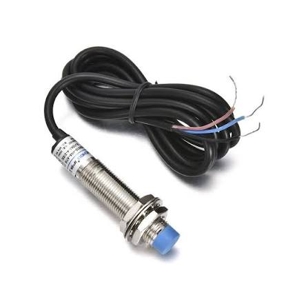

LJ12A3
Categoria: Proximidade (Indutivo)
Conceito
O LJ12A3 é um sensor de proximidade indutivo robusto. É amplamente utilizado na indústria clássica (automação) e em CNCs e impressoras 3D para detectar a presença de objetos metálicos a curtas distâncias.
Princípio de Funcionamento
Contém uma bobina em sua extremidade osciladora. A bobina gera um campo magnético eletromagnético de alta frequência. Quando um objeto metálico (ferroso ou não ferroso) entra neste campo, ele induz correntes parasitas (correntes de Foucault) no metal. Isso drena energia do campo, atenuando a amplitude de oscilação do circuito. O circuito interno detecta a alteração e muda o estado da saída.
Principais Especificações Técnicas
- Tensão de operação: 6V a 36V DC (Geralmente requer circuito divisor de tensão ou optoacoplador para ser lido no Arduino 5V)
- Distância de detecção: ~4 mm (Aço). Para metais não ferrosos (como alumínio), a distância cai para a metade.
- Tipo de Saída: NPN Normalmente Aberto (NO) - envia GND (LOW) quando detecta.
- Frequência de resposta: 500 Hz
Aplicações Industriais ou IoT
Contagem de peças metálicas em esteiras, sensores de fim de curso (limit switches) para eixos de máquinas CNC, posicionamento de robôs e medição de velocidade (contando dentes de uma engrenagem).
Exemplo em um Projeto
Contador de Produção (IoT OEE): Um sensor LJ12A3 está voltado para as peças de aço que saem de uma máquina de corte. Cada vez que o sensor gera um pulso (LOW), o CLP ou ESP32 conta 1 peça. O sistema envia a contagem acumulada por minuto ao servidor na nuvem, permitindo que os gerentes vejam a produtividade (OEE) em tempo real num dashboard da planta.